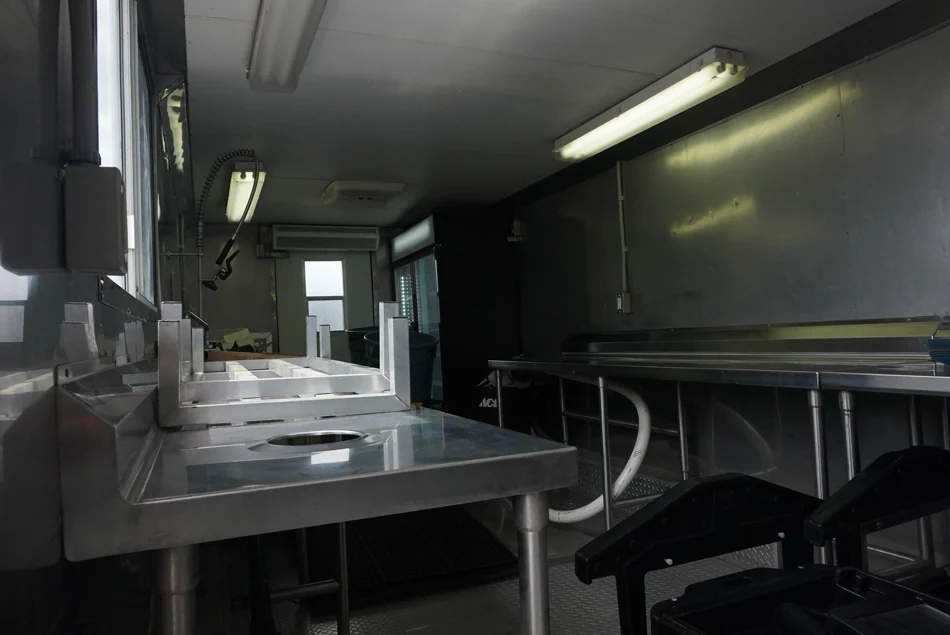
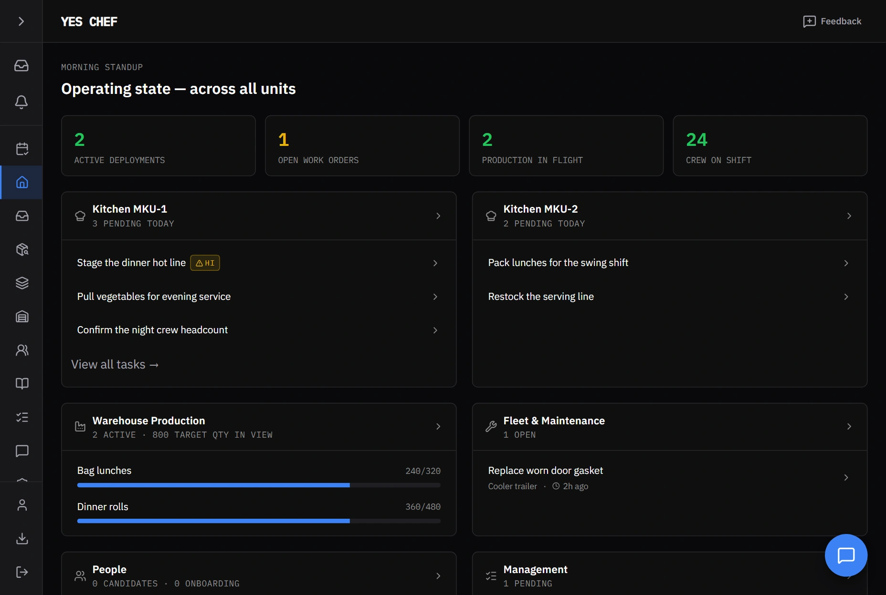
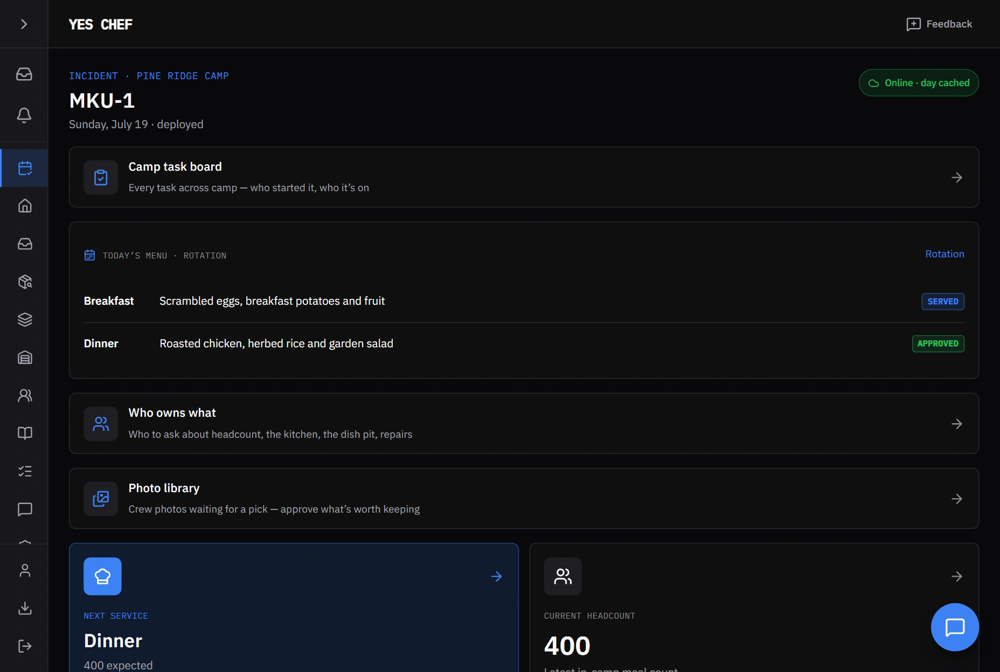
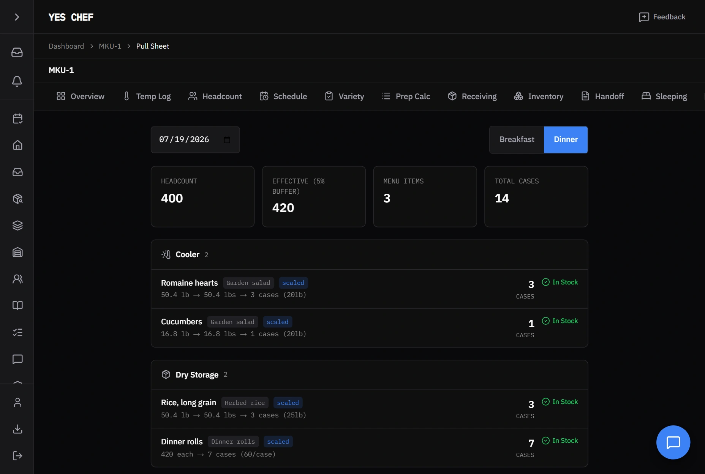
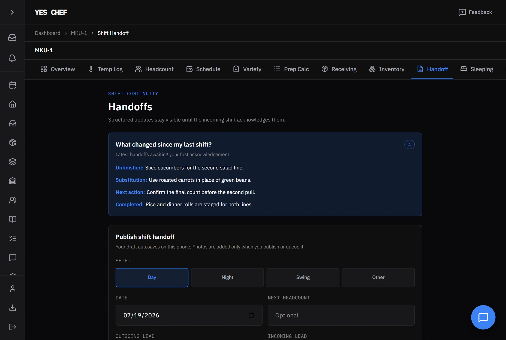
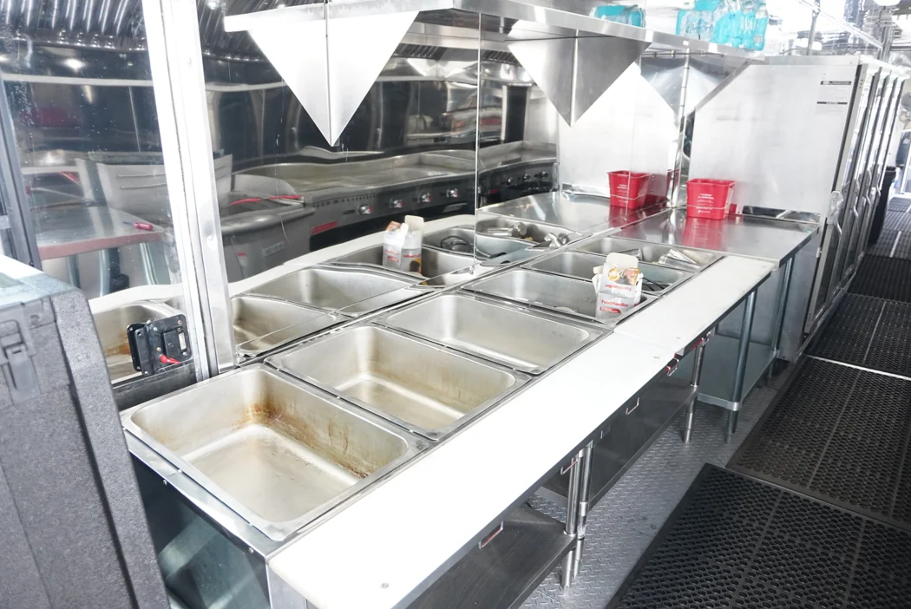

What I’d carry
into next season.
From the kitchen, the question was usually pretty simple. Who’s filling the pans while someone else is out front keeping the line moving? I kept notes on the places where a little planning could give the crew a hand.

Give the salad bar two clear jobs.
My proposed split is a prep cook and a runner. The cook opens the station, preps ingredients and keeps backup pans ready. The runner sets up the bar and drinks, replenishes during service and owns the close. Both know who takes the next empty pan.
Teach the first three shifts.
Hire people for a station and give them a named trainer. I’d protect the first three shifts for working alongside an experienced hand. Start with setup, move through service together, then let the new person run the station with someone there to help.
Make recipes travel with the crew.
A good dinner in one kitchen should be repeatable in the other. Keep the recipe, serving count and pull quantities together. After service, give the cook a place to record what ran short, what came back and what they’d change.
Put a name beside the work.
I’d name leads for the kitchen, front of house, lunches and logistics, and give one person responsibility for hours and paperwork. A crew member should know who can settle a scheduling question. The next shift should know who is following up on a repair.
Follow a delivery all the way in.
Give one person the delivery sheet. Check what arrived, mark the storage location and set aside what the next service needs. Count the cleaning supplies when counting food. A station checklist works a lot better when there’s soap on the shelf.
A shift inside Yes Chef.
Four screens from the running app. The records in this tour are sample data.
The morning standup
Start with a view across the kitchen units. A manager can see which unit needs a closer look before the day gets busy.


Enlarge screenOpen the unit for the day
In this kitchen, the board puts the menu rotation beside the expected headcount of 400. The lead can see what the crew is cooking and how many people to plan for.


Enlarge screenPull enough for dinner
Four hundred dinner orders plus a 5% cushion makes 420 portions. For this sample menu, the app calculates 14 cases and tells the person pulling them what’s in the cooler and what’s in dry storage.


Enlarge screenLeave a note for the next shift
The rolls and rice are staged. The cucumbers still need prep. The cook coming on duty can see what changed on the menu and which count to check next.


Enlarge screenPull sheet example
When the dinner count changes
Move the expected headcount. This example allows an extra five portions for every hundred people.
The rest of
the work.
“I wanted you to see it shaped like actual camp work instead of a stack of sheets.”From my April note sharing Yes Chef
Recruiting and training
People applied through the careers portal. A manager could print a one-page applicant brief for an interview. I also put together short lessons on handwashing, sanitation, rotating stock and building sack lunches.
Menus, counts and equipment
A two-week menu rotation connects the approved plate to kitchen prep and pulls. Inventory tools cover receiving, storage and counts. Fleet records give inspections and repairs a place to follow the equipment back to the yard.
The paperwork behind service
I drafted station procedures and built a contract library organized by section so a lead could look up a requirement from camp. I also mapped the questions around meal invoices, including who signs and which form the office needs. Those billing decisions were still open at handoff.
Life in camp
We tested two-way crew texts in the field. The Camp Board puts menus, services and notices behind a QR code. The app also has crew schedules, sleeping assignments and an hours history. Official payroll stayed with the office.
For the next crew.
I put the season notes, a three-shift training trial and a blank handoff sheet into a short guide. Take whatever helps. If you’d like to try one station together, I’d be glad to walk through it with you.
Jason Pierce
